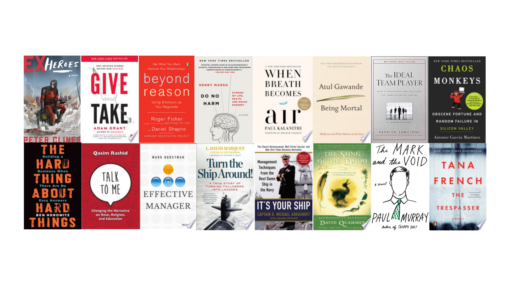

What I read in 2016

I’ve always been a pretty avid reader. Some time this year I came across an article suggesting a target of 50 books a year. (I can’t remember the exact article, but googling ‘read 50 books a year’ brings up a lot of articles and blog posts, so it’s clearly a popular concept.)
Although I love physical books, I switched to e-books some years ago. I typically read during my commute (~3 hrs a day) either on my Kindle or by listening to an audiobook. Ever since Amazon bought Audible a few years back they have been improving the integration between their e-books and audiobooks, so that if you own both, your reading position gets synched between them. They often have deals where you can get the audiobooks for a few dollars when you buy the e-book, so I have been doing that whenever I get the chance.
I fell short of the target of 50 this year, but here’s what I did get through in 2016 (click through for more details on each book):
- Ex-Heroes - Peter Clines
- Ex-Patriots - Peter Clines
- Ex-Isle - Peter Clines
- Ex-Communication: A Novel - Peter Clines
- Ex-Purgatory: A Novel - Peter Clines
- Ex-Isle: A Novel - Peter Clines
- The Thief Lord - Cornelia Funke
- The Joy of jQuery: A Beginner’s Guide to the World’s Most Popular Javascript Library - Alan Forbes
- The Joy of Bootstrap: A smarter way to learn the world’s most popular web framework - Alan Forbes
- A Software Engineer Learns HTML5, JavaScript and jQuery: A guide to standards based web applications - Dane Cameron
- Radical Focus: Achieving Your Most Important Goals With Objectives and Key Results - Christina Wodtke
- Give and Take: Why Helping Others Drives Our Success - Adam Grant Ph. D
- Beyond Reason: Using Emotions as You Negotiate - Roger Fisher, Daniel Shapiro
- Do No Harm: Stories of Life, Death, and Brain Surgery - Henry Marsh
- When Breath Becomes Air - Paul Kalanithi
- Being Mortal - Atul Gowande
- The Ideal Team Player: How to Recognize and Cultivate The Three Essential Virtues - Patrick Lencioni
- Turn the Ship Around!: A True Story of Turning Followers into Leaders - L. David Marquet
- It’s Your Ship: Management Techniques from the Best Damn Ship in the Navy - Michael Abrashoff
- The Effective Manager - Mark Horstman
- Your First 100 Days in a New Executive Job - Robert Hargrove
- The New Leader’s 100-Day Action Plan: How to Take Charge, Build Your Team, and Get Immediate Results - George B. Bradt, Jayme A. Check, Jorge E. Pedraza
- The More of Less: Finding the Life You Want Under Everything You Own - Joshua Becker
- Generative Art: A Practical Guide Using Processing - Matt Pearson
- Talk To Me: Changing the Narrative on Race, Religion, and Education - Qasim Rashid
- Meditations - Marcus Aurelius
- A Game of Thrones - George R.R. Martin
- A Clash of Kings - George R.R. Martin
- A Storm of Swords - George R.R. Martin
- A Feast for Crows - George R.R. Martin
- The Trespasser: A Novel - Tana French
- The Wrong Side of Goodbye (A Harry Bosch Novel) - Michael Connelly
- The Mark and the Void - Paul Murray
- The Song of the Dodo: Island Biogeography in an Age of Extinctions - David Quammen
- Chaos Monkeys: Obscene Fortune and Random Failure in Silicon Valley - Antonio Garcia Martinez
- Disrupted: My Misadventure in the Start-Up Bubble - Dan Lyons
- The Hard Thing About Hard Things: Building a Business When There Are No Easy Answers - Ben Horowitz
- A Few Lessons from Sherlock Holmes - Peter Bevelin